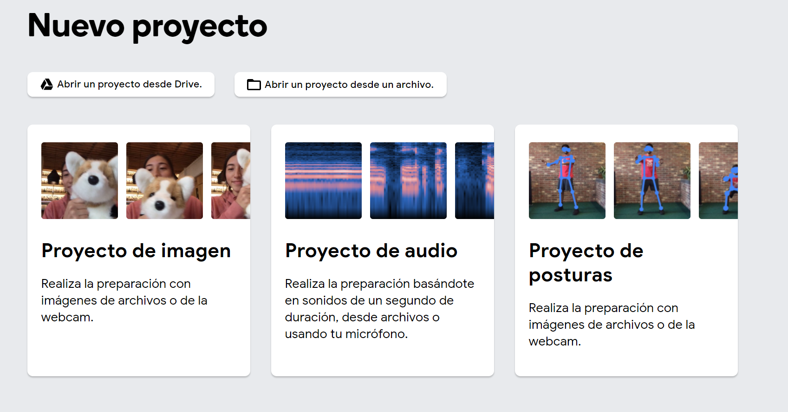
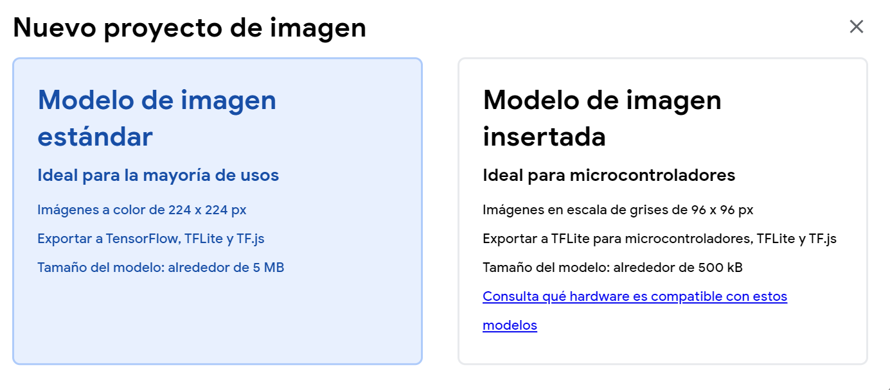
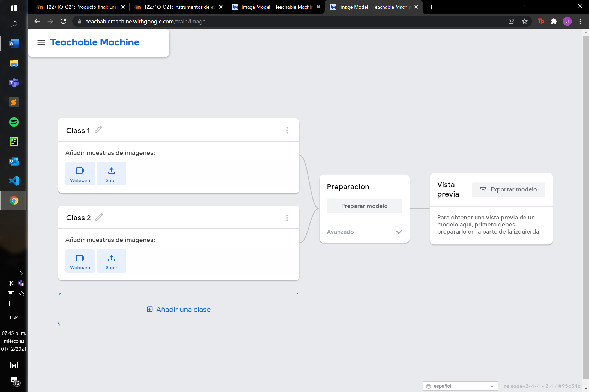
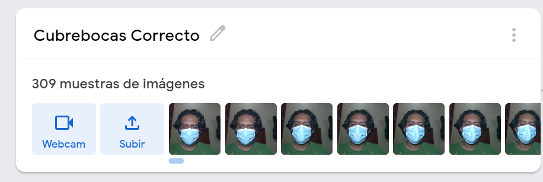
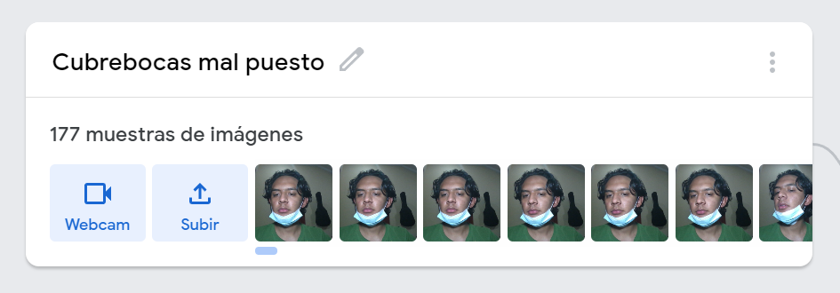
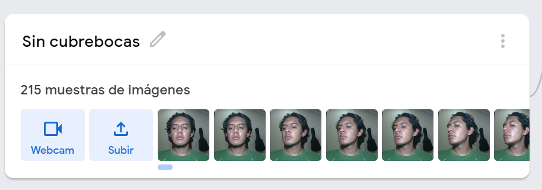
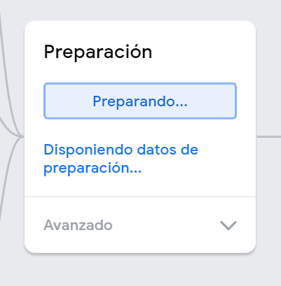

En esta practica se realizara una inteligencia artificial que comparara el uso del cubrebocas.
Paso 1
Para empezar, creando nuestra IA nos dirigimos a Tachable Machine que es una servicio de Google el cual si es bien una inteligencia artificial “sencilla” es un buen inicio para entender.
Paso 2
Una vez estando ahí crearemos un proyecto y nos dará a escoger entre 3 opciones que son para comparar siluetas, formas y sonidos
Paso 3
En mi caso escogeré crear el proyecto de imágenes, una vez seleccionado nos hará elegir entre escoger una imagen insertada o estándar, la primera para usos más avanzados, ahora elegiremos el modelo de imagen estándar
Paso 4
En mi caso escogeré crear el proyecto de imágenes, una vez seleccionado nos hará elegir entre escoger una imagen insertada o estándar, la primera para usos más avanzados, ahora elegiremos el modelo de imagen estándar
Paso 5
En la primera clase se compara si el sujeto tiene el cubrebocas bien puesto, para ello seleccionaremos la primera clase para después con la webcam dejar presionado el botón que dice mantener presionado para grabar para que se tomen muchas fotos para así tener un resultado más acertado.
Paso 6
Lo siguiente a hacer es en la clase 2 le cambiaremos a cubrebocas mal puesto, en ella repetiremos los anterior, pero con el cubrebocas mal puesto.
Paso 7
Pulsaremos el botón de añadir una clase para nombrarla como sin cubrebocas, y repetiremos los pasos anteriores de las clases.
Paso 8
Pasaremos a preparar el modelo, esto llevara unos minutos y no deberemos de cambiar nuestra pantalla.
Paso 9
Una vez listo podremos utilizar nuestra IA..
Paso 10
Ahora bien, si lo requerimpospara colocarlo en algun lado pulsaremos el botón exportar modelo hay varias formas de subirlo y tenerlo, yo me fijare en la de subir a la nube, seleccionaremos las opciones y solo es cosa de copiar el código HTML y pegarlo en nuestro HTML que queramos.
Una vez listo sera asi: